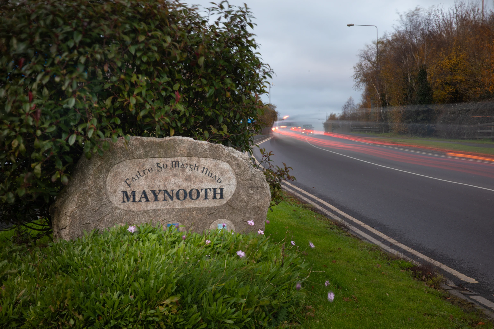
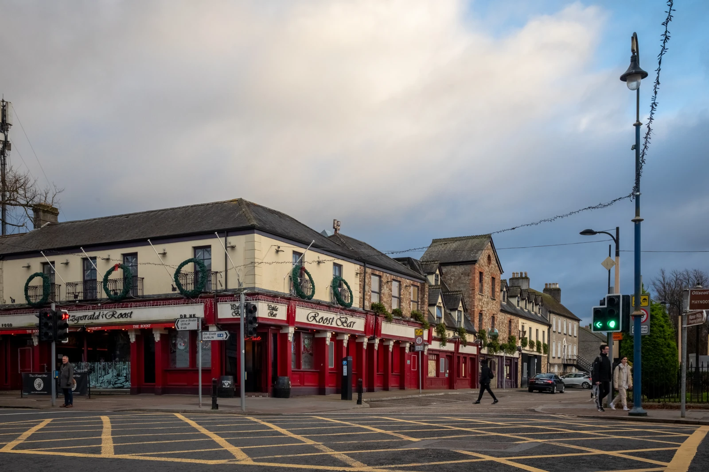

DemoHouse Retrofit
A Maynooth home upgraded to A-rating - open for the town to learn from.
Real projects, real places, real people — explore what the town is already doing, then find your own next step.

tonnes CO₂e - the town's emissions baseline
of emissions come from homes (38.5%) and transport (36.7%)
designated Kildare's Pathfinder Decarbonising Zone *
* Source: Maynooth SEC Energy Master Plan
A Maynooth home upgraded to A-rating - open for the town to learn from.

Safer walking and cycling connections from the Greenway into town.
Turning the Harbour Field into a haven for bees and wildflowers.


An example of how greener streets could support everyday life in Maynooth.

An example of connecting waterside walks with nature and local learning.
Maynooth is one of Ireland's Decarbonising Zones — a whole town working out, in the open, how to cut its emissions. The Zone brings the Council, the university, local groups and residents together around visible projects you can walk past, join in with, or copy at home.
About the Zone
Discover local stories, find community events and see how your group can take part.
Explore community